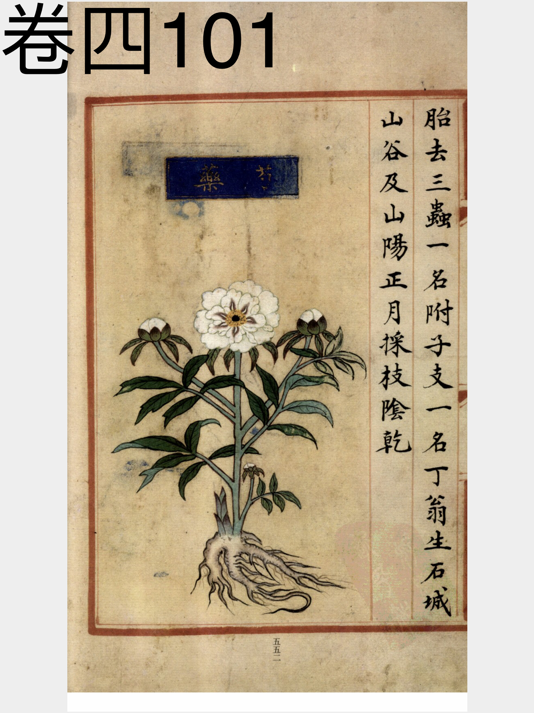
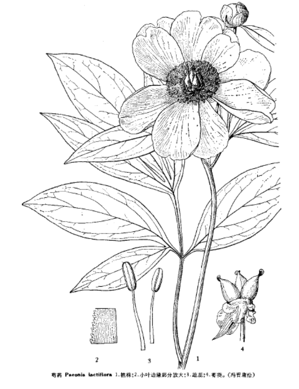

出现篇目
别名 将离（《纲目》）、犁食（《别录》）、白术（《别录》）、余容（《别录》）、铤（《别录》），白者名金芍药（《图经》），赤者名木芍药
古代记载 《毛诗故训传》
勺药，香草。（《毛传》注《溱洧》）
《毛诗草木鸟兽虫鱼疏》
芍药，今药草，芍药无香气非是也，未审今何草。司马相如《赋》云：芍药之和，扬雄《赋》云：甘甜之和，芍药之美七十食也。
《毛诗正义》
陆机《疏》云：“今药草勺药无香气，非是也。未审今何草。（《毛诗正义》疏《溱洧》）
《诗集传》
勺藥、亦香草也。三月開花。芳色可愛。（《诗集传》集注《溱洧》）
《本草纲目》
《别录》曰∶芍药生中岳川谷及丘陵，二月、八月采根，曝干。 弘景曰∶今出白山、蒋山、茅山最好，白而长尺许。余处亦有而多赤，赤者小利。 志曰∶此有赤白两种，其花亦有赤白二色。 颂曰∶今处处有之，淮南者胜。春生红芽作丛，茎上三枝五叶，似牡丹而狭长，高一、二尺。夏初开花，有红白紫数种，结子似牡丹子而小。秋时采根。崔豹《古今注》云∶芍药有二种∶有草芍药、木芍药。木者花大而色深，俗呼为牡丹，非矣。《安期生服炼法》∶芍药有金芍药，色白多脂肉；木芍药，色紫瘦多脉。 承曰∶《本经》芍药生丘陵。今世多用人家种植者，乃欲其花叶肥大，必加粪壤。每岁 八、九月取根分削，因利以为药。今淮南真阳尤多，根虽肥大而香味不佳，入药少效。 时珍曰∶昔人言洛阳牡丹、扬州芍药甲天下。今药中所用，亦多取扬州者。十月生芽，至春乃长，三月开花。其品凡三十余种，有千叶、单叶、楼子之异。入药宜单叶之根，气味全浓。根之赤白，随花之色也。
当代记载 《中国植物志》
芍药（Paeonia lactiflora），芍药科，芍药属植物。多年生草本。根粗壮，分枝黑褐色。茎高40-70厘米，无毛。花瓣白色，有时基部具深紫色斑块。花期5-6月；果期8月。
在我国分布于东北、华北、陕西及甘肃南部。在东北分布于海拔480-700米的山坡草地及林下，在其它各省分布于海拔1000-2300米的山坡草地。在朝鲜、日本、蒙古及苏联西伯利亚地区也有分布。在我国四川、贵州、安徽、山东、浙江等省及各城市公园也有栽培，栽培者，花瓣各色。

<补遗雷公炮制便览>

<中国植物志>